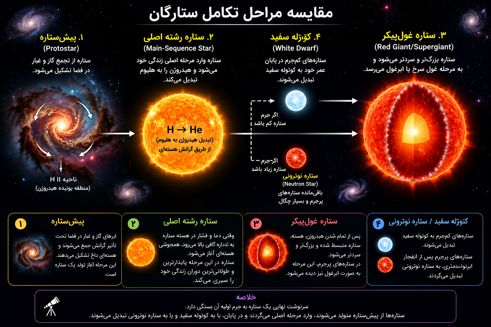
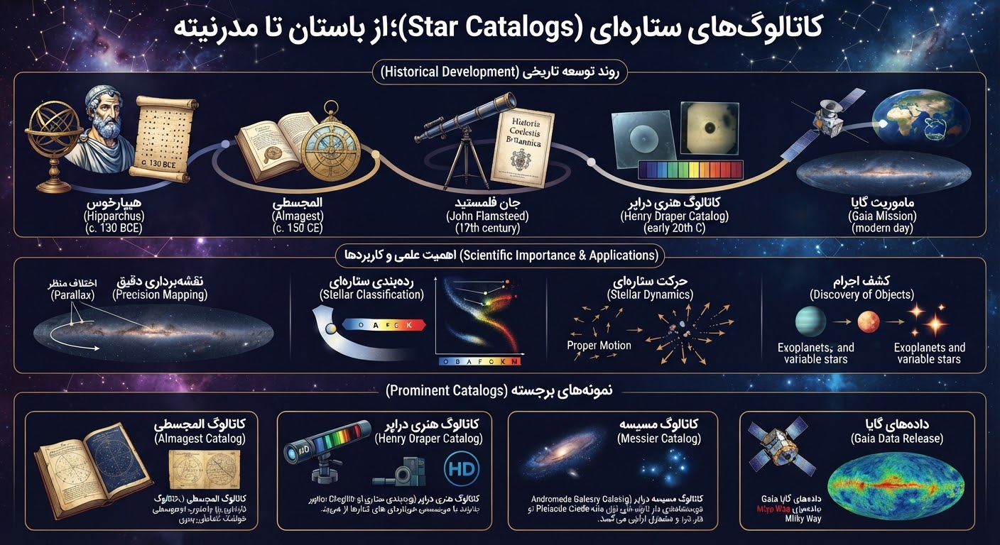

مرحله اولیه شکلگیری ستاره از رمبش ابرهای گاز و غبار. هنوز همجوشی هستهای در آن آغاز نشده است.
پایدارترین مرحله زندگی ستاره که در آن هیدروژن هسته به هیلیوم تبدیل میشود (مانند خورشید).
مرحله پایانی عمر ستاره که با تمام شدن هیدروژن، ستاره منبسط، بزرگ و سردتر میشود.
باقیمانده فوقالعاده متراکم و داغ هسته ستارگان کمجرم پس از پایان سوخت هستهای.

کاتالوگها امکان **نقشهبرداری دقیق (Parallax)**، **بررسی حرکت و پویایی کهکشانها** و **کشف اجرام جدید مانند سیارات فراخورشیدی** را برای اخترشناسان فراهم میکنند.
کاتالوگ المجسطی، کاتالوگ مسیه (اجرام عمیق آسمان)، کاتالوگ HD (طیفسنجی) و دادههای مدرن ماموریت گایا (Gaia DR).